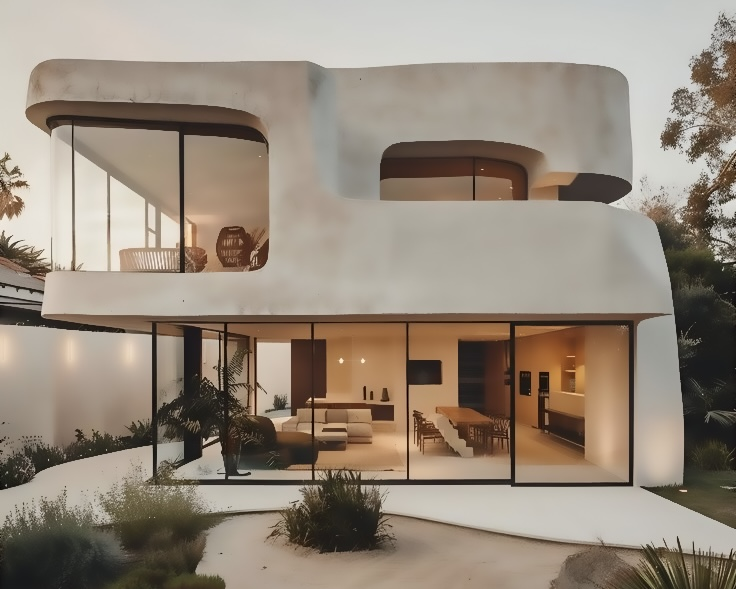
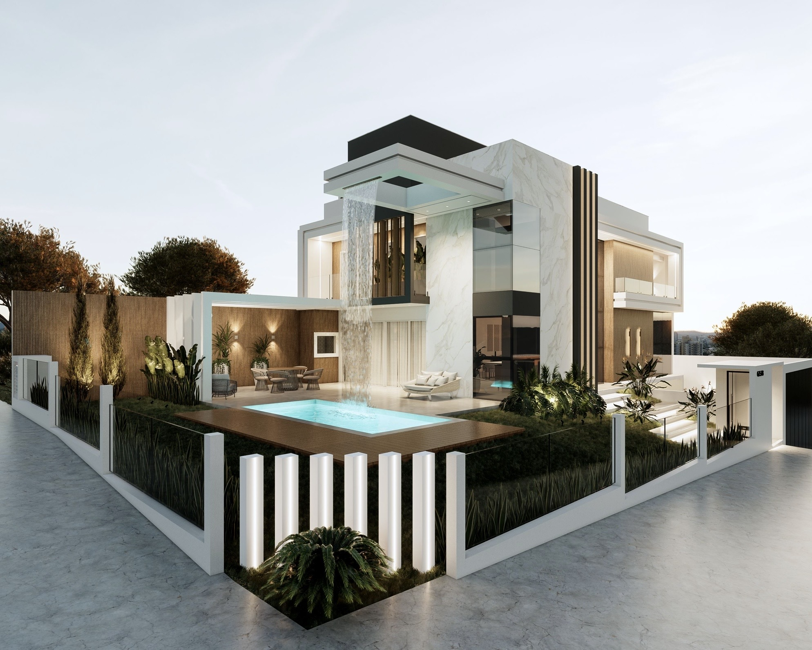
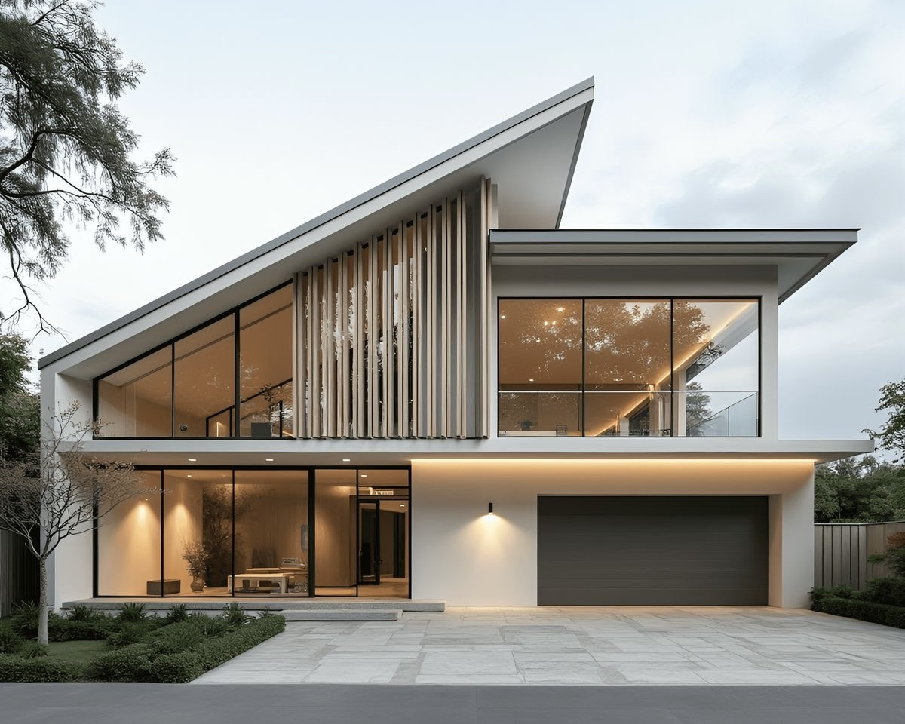
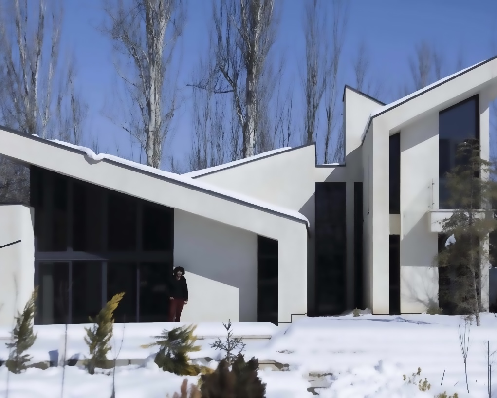
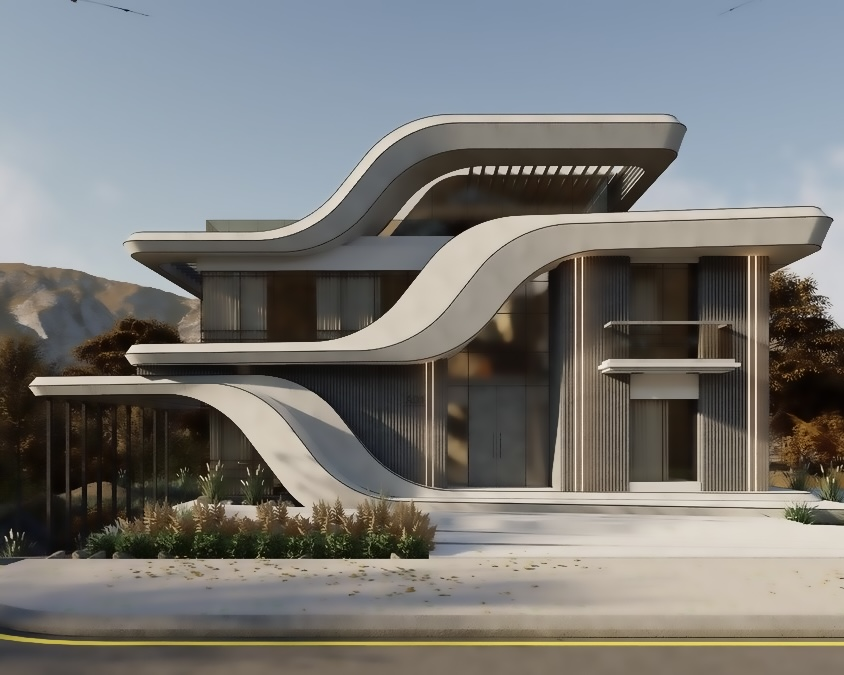
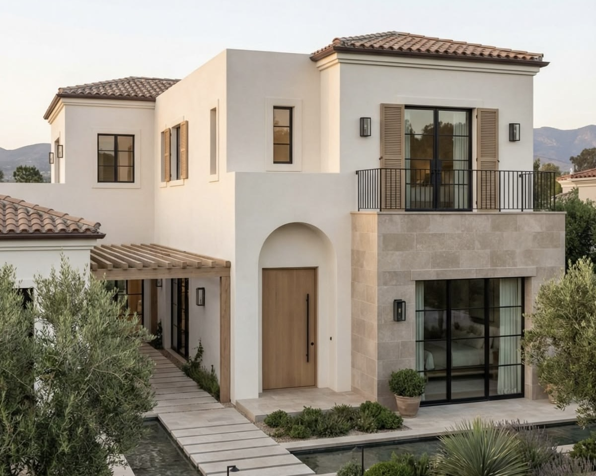

CASA SOLENNE
A contemporary residence shaped by natural light, sculptural forms, and warm materials. Every space is designed to create a quiet connection between architecture and everyday living.


A contemporary residence shaped by natural light, sculptural forms, and warm materials. Every space is designed to create a quiet connection between architecture and everyday living.

A contemporary residence where light, water, and architecture come together to create a refined living experience.

Defined by clean geometries and carefully framed views, this residence offers a refined interpretation of modern living. Material contrasts and natural light bring depth to its understated architecture.

An exploration of proportion, rhythm, and spatial efficiency, designed for contemporary urban living. Thoughtful layouts and bold architectural lines transform everyday routines into intentional experiences.

Inspired by the relationship between landscape and home, this project integrates organic textures, native vegetation, and contemporary architectural forms. The result is a residence that feels both grounded and forward-looking.

Inspired by the relationship between landscape and home, this project integrates organic textures and contemporary architectural forms. The result is a residence that feels both grounded and forward-looking.